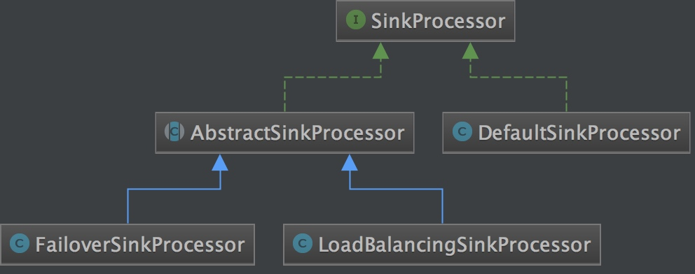

<!doctype html>
<html class="no-js" lang="en">
  <head>
    <meta charset="utf-8" />
    <meta name="viewport" content="width=device-width, initial-scale=1.0" />
    <title>
    
  flume-ng源码分析-核心组件分析 - IT framer
  
  </title>
  
  
  <link href="atom.xml" rel="alternate" title="IT framer" type="application/atom+xml">
    <link rel="stylesheet" href="asset/css/foundation.min.css" />
    <link rel="stylesheet" href="asset/css/docs.css" />
    <script src="asset/js/vendor/modernizr.js"></script>
    <script src="asset/js/vendor/jquery.js"></script>
  <script src="asset/highlightjs/highlight.pack.js"></script>
  <link href="asset/highlightjs/styles/github.css" media="screen, projection" rel="stylesheet" type="text/css">
  <script>hljs.initHighlightingOnLoad();</script>
<script type="text/javascript">
  function before_search(){
    var searchVal = 'site:www.blacklight.xin ' + document.getElementById('search_input').value;
    document.getElementById('search_q').value = searchVal;
    return true;
  }
</script>
  </head>
  <body class="antialiased hide-extras">
    
    <div class="marketing off-canvas-wrap" data-offcanvas>
      <div class="inner-wrap">


<nav class="top-bar docs-bar hide-for-small" data-topbar>


  <section class="top-bar-section">
  <div class="row">
      <div style="position: relative;width:100%;"><div style="position: absolute; width:100%;">
        <ul id="main-menu" class="left">
        
        <li id=""><a target="self" href="index.html">Home</a></li>
        
        <li id=""><a target="_self" href="archives.html">Archives</a></li>
        
        </ul>

        <ul class="right" id="search-wrap">
          <li>
<form target="_blank" onsubmit="return before_search();" action="http://google.com/search" method="get">
    <input type="hidden" id="search_q" name="q" value="" />
    <input tabindex="1" type="search" id="search_input"  placeholder="Search"/>
</form>
</li>
          </ul>
      </div></div>
  </div>
  </section>

</nav>

        <nav class="tab-bar show-for-small">
  <a href="javascript:void(0)" class="left-off-canvas-toggle menu-icon">
    <span> &nbsp; IT framer</span>
  </a>
</nav>

<aside class="left-off-canvas-menu">
      <ul class="off-canvas-list">
       
       <li><a href="index.html">HOME</a></li>
    <li><a href="archives.html">Archives</a></li>
    <li><a href="about.html">ABOUT</a></li>

    <li><label>Categories</label></li>

        
            <li><a href="flume.html">flume</a></li>
        
            <li><a href="java.html">java</a></li>
        
            <li><a href="kafka.html">kafka</a></li>
        
            <li><a href="awk.html">awk</a></li>
        
            <li><a href="storm.html">storm</a></li>
        
            <li><a href="spark.html">spark</a></li>
        
            <li><a href="redis.html">redis</a></li>
        
            <li><a href="liunx.html">linux</a></li>
        
            <li><a href="zookeeper.html">zookeeper</a></li>
        
            <li><a href="hive.html">hive</a></li>
        
            <li><a href="maven.html">maven</a></li>
        
            <li><a href="shell.html">shell</a></li>
        
            <li><a href="docker.html">docker</a></li>
        
            <li><a href="mysql.html">mysql</a></li>
        
            <li><a href="datahole.html">datahole</a></li>
        
            <li><a href="scala.html">scala</a></li>
         

      </ul>
    </aside>

<a class="exit-off-canvas" href="#"></a>


        <section id="main-content" role="main" class="scroll-container">
        
       

 <script type="text/javascript">
  $(function(){
    $('#menu_item_index').addClass('is_active');
  });
</script>
<div class="row">
  <div class="large-8 medium-8 columns">
      <div class="markdown-body article-wrap">
       <div class="article">
          
          <h1>flume-ng源码分析-核心组件分析</h1>
     
        <div class="read-more clearfix">
          <span class="date">2017/5/30</span>

          <span>posted in&nbsp;</span> 
          
              <span class="posted-in"><a href='flume.html'>flume</a></span>
           
         
          <span class="comments">
            

            
          </span>

        </div>
      </div><!-- article -->

      <div class="article-content">
      <p>从第一篇分析可知,flume中所有的组件都会实现LifecycleAware 接口。该接口定义如下：</p>

<pre><code class="language-java">public interface LifecycleAware {
  public void start();
  public void stop();
  public LifecycleState getLifecycleState();
}
</code></pre>

<p>在组件启动的时候会调用start方法，当有异常时调用stop方法。getLifecycleState 方法返回该组件的状态。包含 <strong>IDLE, START, STOP, ERROR;</strong> </p>

<p>当在组件开发中需要配置一些属性的时候可以实现<strong>Configurable</strong>接口</p>

<pre><code class="language-java">public interface Configurable {
  public void configure(Context context);

}
</code></pre>

<p>下面开始分析Agent中各个组件的实现</p>

<span id="more"></span><!-- more -->

<h2 id="toc_0">source 实现</h2>

<h2 id="toc_1">source定义</h2>

<pre><code class="language-java">public interface Source extends LifecycleAware, NamedComponent {
 public void setChannelProcessor(ChannelProcessor channelProcessor);
 public ChannelProcessor getChannelProcessor();
}
</code></pre>

<p>可以看到Source 继承了LifecycleAware 接口，并且提供了<strong>ChannelProcessor</strong>的getter和setter方法,channelProcessor在<strong>常用架构篇中</strong>降到提供了日志过滤链,和channel选择的功能。所以Source的逻辑应该都在LifecycleAware中的start,stop方法中.</p>

<h2 id="toc_2">source创建</h2>

<p>在<strong>启动篇</strong>中，我们讲到了flume是如何启动的。大致流程就是读取配置文件,生成flume的各种组件,执行各个组件的start()方法。在<strong>getConfiguration()</strong>方法中调用了<strong>loadSources()</strong>方法。<br/>
可以看到在loadSources方法中如何创建Source的</p>

<pre><code class="language-java">private void loadSources(AgentConfiguration agentConf,
      Map&lt;String, ChannelComponent&gt; channelComponentMap,
      Map&lt;String, SourceRunner&gt; sourceRunnerMap)
      throws InstantiationException {

    Set&lt;String&gt; sourceNames = agentConf.getSourceSet();//获取所有的Source
    Map&lt;String, ComponentConfiguration&gt; compMap =agentConf.getSourceConfigMap(); //获取所有Source对应的配置
    for (String sourceName : sourceNames) {
      ComponentConfiguration comp = compMap.get(sourceName);//获取该source对应的配置
      if(comp != null) {
        SourceConfiguration config = (SourceConfiguration) comp; //转化为source配置

        Source source = sourceFactory.create(comp.getComponentName(),
            comp.getType());//通过sourceFactory 创建source
        try {
          Configurables.configure(source, config);//配置组件的其他属性
          Set&lt;String&gt; channelNames = config.getChannels()//获取该source的所有channel名称
          List&lt;Channel&gt; sourceChannels = new ArrayList&lt;Channel&gt;();
          for (String chName : channelNames) {//遍历所有的额channle，如果该channel已经实例化过了并且在channelComponentMap中已经存储了，那么将该channel放入sourceChannels
            ChannelComponent channelComponent = channelComponentMap.get(chName);
            if(channelComponent != null) {
              sourceChannels.add(channelComponent.channel);
            }
          }
          if(sourceChannels.isEmpty()) {//如果这个source没有关联到任何channel那么直接抛出异常
            String msg = String.format(&quot;Source %s is not connected to a &quot; +
                &quot;channel&quot;,  sourceName);
            throw new IllegalStateException(msg);
          }
          //以下创建出ChannelProcessor并且配置其他属性
          ChannelSelectorConfiguration selectorConfig =
              config.getSelectorConfiguration();

          ChannelSelector selector = ChannelSelectorFactory.create(
              sourceChannels, selectorConfig);

          ChannelProcessor channelProcessor = new ChannelProcessor(selector);
          Configurables.configure(channelProcessor, config);

          source.setChannelProcessor(channelProcessor);//设置channelSelector
          sourceRunnerMap.put(comp.getComponentName(),
              SourceRunner.forSource(source));//将改source，以及对应的SourceRunner放入SourceRunnerMap中
          for(Channel channel : sourceChannels) {//遍历改source所有的channel并且将改source添加到该channel的Component中
            ChannelComponent channelComponent = Preconditions.
                checkNotNull(channelComponentMap.get(channel.getName()),
                    String.format(&quot;Channel %s&quot;, channel.getName()));
            channelComponent.components.add(sourceName);
          }
        } catch (Exception e) {
          String msg = String.format(&quot;Source %s has been removed due to an &quot; +
              &quot;error during configuration&quot;, sourceName);
          LOGGER.error(msg, e);
        }
      }
    }
    ......
</code></pre>

<p>从上面的分析中可以看出，Source是后SourceFactory创建的，创建之后绑定到SourceRunner中，并且在SourceRunner中启动了Source。<br/>
  SourceFactory只有一个实现DefaultSourceFactory。创建Source过程如下:</p>

<pre><code class="language-java">  public Source create(String name, String type) throws FlumeException {
    Preconditions.checkNotNull(name, &quot;name&quot;);
    Preconditions.checkNotNull(type, &quot;type&quot;);
    logger.info(&quot;Creating instance of source {}, type {}&quot;, name, type);
    Class&lt;? extends Source&gt; sourceClass = getClass(type);//通过对应的类型找到对应的class
    try {
      Source source = sourceClass.newInstance();//直接创建实例
      source.setName(name);
      return source;
    } catch (Exception ex) {
      throw new FlumeException(&quot;Unable to create source: &quot; + name
          +&quot;, type: &quot; + type + &quot;, class: &quot; + sourceClass.getName(), ex);
    }
  }
</code></pre>

<p>在创建重，通过type来或者source类的class。在getClass方法中，首先会去找type对应类型的class。在SourceType中定义的。如果没有找到，则直接获得配置的类全路径。最后通过Class.forName(String)获取class对象。</p>

<p>source提供了两种方式类获取数据:轮训拉去和事件驱动</p>

<p></p>

<p>PollableSource 提供的默认实现如下：<br/>
</p>

<p>比如KafkaSource 利用Kafka的ConsumerApi，主动去拉去数据。</p>

<p>EventDrivenSource 提供的默认实现如下</p>

<p></p>

<p>如HttpSource，NetcatSource就是事件驱动的，所谓事件驱动也就是被动等待。在HttpSource中内置了一个Jetty server，并且设置FlumeHTTPServlet 作为handler去处理数据。</p>

<h2 id="toc_3">source的启动</h2>

<p>从上面的分析中知道，在启动flume读取配置文件时,会将所有的组件封装好，然后再启动。对于Source而言,封装成了SourceRunner,通过SourceRunner间接启动Source。</p>

<pre><code class="language-java">public static SourceRunner forSource(Source source) {
    SourceRunner runner = null;

    if (source instanceof PollableSource) {//判断该source是否为PollableSource
      runner = new PollableSourceRunner();
      ((PollableSourceRunner) runner).setSource((PollableSource) source);
    } else if (source instanceof EventDrivenSource) {//判断该source是否为EventDrivenSource
      runner = new EventDrivenSourceRunner();
      ((EventDrivenSourceRunner) runner).setSource((EventDrivenSource) source);
    } else {//否则抛出异常
      throw new IllegalArgumentException(&quot;No known runner type for source &quot;
          + source);
    }
    return runner;
  }
</code></pre>

<p>从上面可以看出SourceRunner 默认提供两种实现，PollableSourceRunner,EventDrivenSource.分别对应PollableSource 和EventDrivenSource。</p>

<h3 id="toc_4">查看PollableSourceRunner是如何启动的</h3>

<pre><code class="language-java">@Override
  public void start() {
    PollableSource source = (PollableSource) getSource();
    ChannelProcessor cp = source.getChannelProcessor();
    cp.initialize();//初始化ChannelProcessor
    source.start();//启动source组件

    runner = new PollingRunner();//单独启动一个线程去轮询source

    runner.source = source;
    runner.counterGroup = counterGroup;
    runner.shouldStop = shouldStop;

    runnerThread = new Thread(runner);
    runnerThread.setName(getClass().getSimpleName() + &quot;-&quot; + 
        source.getClass().getSimpleName() + &quot;-&quot; + source.getName());
    runnerThread.start();

    lifecycleState = LifecycleState.START;//设置状态为START
  }
</code></pre>

<p>在PollableSourceRunner中我们看到单独启动一个线程去执行PollingRunner,这个线程的作用就是不断的去轮询。查看PollingRunner的实现</p>

<pre><code class="language-java">@Override
    public void run() {
      logger.debug(&quot;Polling runner starting. Source:{}&quot;, source);

      while (!shouldStop.get()) {//没有停止，那就继续吧
        counterGroup.incrementAndGet(&quot;runner.polls&quot;);

        try {
        //真正的拉去逻辑在source process()方法中，调用该方法进行拉去数据,并且
        //判断返回状态是否为BACKOFF(失败补偿),如果是那么等待時間超时之后就会重试
          if (source.process().equals(PollableSource.Status.BACKOFF)) {
            counterGroup.incrementAndGet(&quot;runner.backoffs&quot;);

            Thread.sleep(Math.min(
                counterGroup.incrementAndGet(&quot;runner.backoffs.consecutive&quot;)
                * backoffSleepIncrement, maxBackoffSleep));
          } else {
            counterGroup.set(&quot;runner.backoffs.consecutive&quot;, 0L);
          }
        } catch (InterruptedException e) {
          logger.info(&quot;Source runner interrupted. Exiting&quot;);
          counterGroup.incrementAndGet(&quot;runner.interruptions&quot;);
        } ......
      }

      logger.debug(&quot;Polling runner exiting. Metrics:{}&quot;, counterGroup);
    }
</code></pre>

<p>比如KafkaSource ,它的逻辑就在process方法中，</p>

<pre><code class="language-java">          // get next message
          MessageAndMetadata&lt;byte[], byte[]&gt; messageAndMetadata = it.next();
          kafkaMessage = messageAndMetadata.message();
          kafkaKey = messageAndMetadata.key();

          // Add headers to event (topic, timestamp, and key)
          headers = new HashMap&lt;String, String&gt;();
          headers.put(KafkaSourceConstants.TIMESTAMP,
                  String.valueOf(System.currentTimeMillis()));
          headers.put(KafkaSourceConstants.TOPIC, topic);
          
</code></pre>

<h3 id="toc_5">EventDrivenSourceRunner</h3>

<pre><code>@Override
  public void start() {
    Source source = getSource();//获取source
    ChannelProcessor cp = source.getChannelProcessor();//获取source对应的ChannelProcessor
    cp.initialize();//初始化channelprocessor
    source.start();//启动source
    lifecycleState = LifecycleState.START;//标记状态为START
  }
</code></pre>

<p>可以看到EventDrivenSourceRunner和PollableSourceRunnner 启动流程大致相同,只是PollableSourceRunner会额外启动一个线程去轮询source。</p>

<h2 id="toc_6">channel的实现</h2>

<p>source 获取到数据后，会交给channelProcessor处理，发送到channel。最后由sink消费掉。<br/>
所以channel是source，sink实现异步化的关键。</p>

<p>channelProcessor 中两格重要的成员</p>

<pre><code class="language-java">  private final ChannelSelector selector;//channel选择器
  private final InterceptorChain interceptorChain; //过滤链
</code></pre>

<p>InterceptorChain 是有多个Interceptor组成,并且实现了Interceptor接口</p>

<pre><code>public class InterceptorChain implements Interceptor {
     private List&lt;Interceptor&gt; interceptors;
}
</code></pre>

<p>Interceptor.java</p>

<pre><code class="language-java">public interface Interceptor {
  public void initialize();// 做一些处理话工作
  public Event intercept(Event event);//拦截单个event并且返回
  public List&lt;Event&gt; intercept(List&lt;Event&gt; events);//批量拦截event
  public void close();
    public interface Builder extends Configurable {
    public Interceptor build();
  }//用来创建特定的Interceptor
}
</code></pre>

<p>Interceptor定义了一些处理Event的接口，再Event处理之后都会返回改Envent</p>

<p>从source的分析中我们可以知道,如果是PollableSourceRunner会调用source 中的process()方法。如果是EventDrivenSourceRunner，就会用特定的方法来获取source，比如httpSource 利用FlumeHTTPServlet来接受消息</p>

<pre><code class="language-java">try {
        events = handler.getEvents(request);//从请求中获取event
      ...
            try {
        getChannelProcessor().processEventBatch(events);//通过ChanneProcess进行的processEventBatch方法进行批量处理
      } catch (ChannelException ex) {
</code></pre>

<p>比如KafkaSource 是PollableSourceRunner 那么会调用KafkaSource中的process()方法。</p>

<pre><code class="language-java">public Status process() throws EventDeliveryException {
   ...
   
   // get next message
          MessageAndMetadata&lt;byte[], byte[]&gt; messageAndMetadata = it.next();
          kafkaMessage = messageAndMetadata.message();
          kafkaKey = messageAndMetadata.key();

          // Add headers to event (topic, timestamp, and key)
          headers = new HashMap&lt;String, String&gt;();
          headers.put(KafkaSourceConstants.TIMESTAMP,
                  String.valueOf(System.currentTimeMillis()));
          headers.put(KafkaSourceConstants.TOPIC, topic);
          if (kafkaKey != null) {
            headers.put(KafkaSourceConstants.KEY, new String(kafkaKey));
          }
          ......
          event = EventBuilder.withBody(kafkaMessage, headers);
          eventList.add(event);
          ......
          
        if()......  
        getChannelProcessor().processEventBatch(eventList);//交给channelProcessor处理
        counter.addToEventAcceptedCount(eventList.size());
        ...
      }
}

</code></pre>

<p>从以上分析不管source是轮询还是事件驱动的，都会触发ChannelProcessor中的processEvent或者ProcesEventBatch方法</p>

<pre><code class="language-java">public void processEventBatch(List&lt;Event&gt; events) {
    events = interceptorChain.intercept(events);//调用Interceptor处理events
    
    List&lt;Channel&gt; reqChannels = selector.getRequiredChannels(event);//获取必须成功处理的Channel ,写失败了必须回滚source
    List&lt;Channel&gt; optChannels = selector.getOptionalChannels(event);//获取非必须成功处理的channel，写失败了就忽略
    
    
    // 這裡分析處理必須成功channel的情況。非必須的channel處理情況一樣
    for (Channel reqChannel : reqChannelQueue.keySet()) {
      Transaction tx = reqChannel.getTransaction();//获取该channel上的事务
      Preconditions.checkNotNull(tx, &quot;Transaction object must not be null&quot;);
      try {
        tx.begin();//开始事务

        List&lt;Event&gt; batch = reqChannelQueue.get(reqChannel);//获取events

        for (Event event : batch) {
          reqChannel.put(event);//处理Channel
        }

        tx.commit();//提交事务
      } catch (Throwable t) {
        tx.rollback();//发生异常回滚
        if (t instanceof Error) {
          LOG.error(&quot;Error while writing to required channel: &quot; +
              reqChannel, t);
          throw (Error) t;
        } else {
          throw new ChannelException(&quot;Unable to put batch on required &quot; +
              &quot;channel: &quot; + reqChannel, t);
        }
      } finally {
        if (tx != null) {
          tx.close();//关闭事务
        }
      }
    }
}
</code></pre>

<p>最后就是ChannelSelector ，flume默认提供两种实现多路复用和复制。多路复用选择器可以根据header中的值而选择不同的channel，复制就会把event复制到多个channel中。flume默认是复制选择器。</p>

<p></p>

<p>同样Selector的创建也是通过ChannelSelectorFactory创建的.</p>

<pre><code class="language-java"> 
 public static ChannelSelector create(List&lt;Channel&gt; channels,
      ChannelSelectorConfiguration conf) {
    String type = ChannelSelectorType.REPLICATING.toString();
    if (conf != null){
      type = conf.getType();
    }
    ChannelSelector selector = getSelectorForType(type);
    selector.setChannels(channels);
    Configurables.configure(selector, conf);
    return selector;
  }
</code></pre>

<p>默认提供复制选择器，如果配置文件中配置了选择器那么就从配置文件中获取。</p>

<p>上面看到在processEventBatch 方法中调用channel的put方法。channel中提供了基本的<br/>
 put和take方法来实现Event的流转。</p>

<pre><code class="language-java"> public interface Channel extends LifecycleAware, NamedComponent {
  public void put(Event event) throws ChannelException;//向channel中存放
  public Event take() throws ChannelException;//消费event
  public Transaction getTransaction();//获取事务
}
</code></pre>

<p>flume提供的默认channel如下图所示:<br/>
 </p>

<h2 id="toc_7">sink的实现</h2>

<h3 id="toc_8">sink定义：</h3>

<pre><code class="language-java">public interface Sink extends LifecycleAware, NamedComponent {
  public void setChannel(Channel channel);
  public Channel getChannel();
  public Status process() throws EventDeliveryException;
  public static enum Status {
    READY, BACKOFF
  }
}
</code></pre>

<p>提供了channel的setter,getter方法。process方法用来消费。并返回状态READY,BACKOFF</p>

<h3 id="toc_9">sink的创建</h3>

<pre><code class="language-java">SinkConfiguration config = (SinkConfiguration) comp;
 Sink sink = sinkFactory.create(comp.getComponentName(),
 comp.getType());
</code></pre>

<p>sink的创建也是通过sinkFactory</p>

<pre><code class="language-java">public Sink create(String name, String type) throws FlumeException {
    Preconditions.checkNotNull(name, &quot;name&quot;);
    Preconditions.checkNotNull(type, &quot;type&quot;);
    logger.info(&quot;Creating instance of sink: {}, type: {}&quot;, name, type);
    Class&lt;? extends Sink&gt; sinkClass = getClass(type);//获取sink对应的类型的Class
    try {
      Sink sink = sinkClass.newInstance();//创建实例
      sink.setName(name);
      return sink;
    } catch (Exception ex) {
      throw new FlumeException(&quot;Unable to create sink: &quot; + name
          + &quot;, type: &quot; + type + &quot;, class: &quot; + sinkClass.getName(), ex);
    }
  }
</code></pre>

<p>通过传入的type找到对应的Class 要是没有找到则直接通过Class.forNamae(String name)来创建</p>

<p>sink还提供了分组功能。该功能由SinkGroup实现。在SinkGroup内部如何调度多个Sink，则交给SinkProcessor完成。</p>

<h3 id="toc_10">sink的启动</h3>

<p>和Source一样，flume也为Sink提供了SinkRunner来流转Sink<br/>
在sinkRunner中</p>

<pre><code class="language-java">public void start() {
    SinkProcessor policy = getPolicy();
    policy.start();//启动SinkProcessor
    runner = new PollingRunner();//单独启动一个线程，从channel中消费数据
    runner.policy = policy;
    runner.counterGroup = counterGroup;
    runner.shouldStop = new AtomicBoolean();
    runnerThread = new Thread(runner);
    runnerThread.setName(&quot;SinkRunner-PollingRunner-&quot; +
        policy.getClass().getSimpleName());
    runnerThread.start();
    lifecycleState = LifecycleState.START;
  }

</code></pre>

<p>sinkRunner中通过启动SinkProcessor 间接启动Sink，并且单独启动一个线程，不停地调用process()方法从channel中消费数据<br/>
在SinkProcessor中，如果是DefaultSinkProcessor 那么直接调用sink.start()方法启动sink。如果是LoadBalancingSinkProcessor，FailoverSinkProcessor由于这两种处理器中包含多个Sink，所以会依次遍历sink 调用start()方法启动</p>

<pre><code class="language-java">public void run() {
      logger.debug(&quot;Polling sink runner starting&quot;);

      while (!shouldStop.get()) {//判断是否停止
        try {
          if (policy.process().equals(Sink.Status.BACKOFF)) {//调用SinkProcessor的proces()方法进行处理
            counterGroup.incrementAndGet(&quot;runner.backoffs&quot;);
            Thread.sleep(Math.min(
                counterGroup.incrementAndGet(&quot;runner.backoffs.consecutive&quot;)
                * backoffSleepIncrement, maxBackoffSleep));
          } else {
            counterGroup.set(&quot;runner.backoffs.consecutive&quot;, 0L);
          }
        }
      }
    }
</code></pre>

<p>该线程会不停的执行SinkProcessor的process()方法，而SinkProcessor的process()方法会调用对应的Sink的process()方法。然后判断处理状态如果是失败补偿，那么等待超时时间后重试</p>

<h3 id="toc_11">SinkGroup</h3>

<pre><code class="language-java">public class SinkGroup implements Configurable, ConfigurableComponent {
  List&lt;Sink&gt; sinks;
  SinkProcessor processor;
  SinkGroupConfiguration conf;
  ......  
}
</code></pre>

<p>SinkGroup中包含多个Sink,并且提供一个SinkProcessor来处理SinkGroup内部调度</p>

<h3 id="toc_12">SinkProcessor</h3>

<p>SinkProcessor 默认提供三种实现。DefaultSinkProcessor,LoadBalancingSinkProcessor,FailoverSinkProcessor</p>

<p></p>

<p>DefaultSinkProcessor：默认实现，适用于单个sink<br/>
LoadBalancingSinkProcessor：提供负载均衡<br/>
FailoverSinkProcessor：提供故障转移</p>

<h4 id="toc_13">DefaultSinkProcessor</h4>

<pre><code class="language-java">public class DefaultSinkProcessor implements SinkProcessor,
ConfigurableComponent {
  private Sink sink;
  private LifecycleState lifecycleState;

  @Override
  public void start() {
    Preconditions.checkNotNull(sink, &quot;DefaultSinkProcessor sink not set&quot;);
    sink.start();//启动sink
    lifecycleState = LifecycleState.START;
  }

  @Override
  public Status process() throws EventDeliveryException {
    return sink.process();
  }

  @Override
  public void setSinks(List&lt;Sink&gt; sinks) {
    Preconditions.checkNotNull(sinks);
    Preconditions.checkArgument(sinks.size() == 1, &quot;DefaultSinkPolicy can &quot;
        + &quot;only handle one sink, &quot;
        + &quot;try using a policy that supports multiple sinks&quot;);
    sink = sinks.get(0);
  }
}
</code></pre>

<p>从上面可以看出DefaultSinkProcessor 只能处理一个Sink。在process方法中调用sink的方法。具体到某个具体的Sink，比如HDFSEventSink,那么就执行该sink的process方法</p>

<p>接下来分析SinkProcessor中负载均衡和故障转移 是如何具体实现的。</p>

<h4 id="toc_14">FailOverSinkProcessor 实现分析</h4>

<p><strong>FailOverSinkProcessor</strong>  中process()方法实现如下:</p>

<pre><code class="language-java">@Override
  public Status process() throws EventDeliveryException {
    Long now = System.currentTimeMillis();
    while(!failedSinks.isEmpty() &amp;&amp; failedSinks.peek().getRefresh() &lt; now) {//检查失败队列是否有sink，并且队列中第一个sink过了失败补偿时间
      FailedSink cur = failedSinks.poll();//从失败队列中获取第一个sink，并且在队列中删除
      Status s;
      try {
        s = cur.getSink().process();//调用sink的process()方法进行处理
        if (s  == Status.READY) {//如果状态是就绪
          liveSinks.put(cur.getPriority(), cur.getSink());//将该sink放入存活队列
          activeSink = liveSinks.get(liveSinks.lastKey());//重新赋值给activeSink
          logger.debug(&quot;Sink {} was recovered from the fail list&quot;,
                  cur.getSink().getName());
        } else {//sink 处理失败
          failedSinks.add(cur);//加入失败队列
        }
        return s;
      } catch (Exception e) {
        cur.incFails();//发生异常，增加失败次数
        failedSinks.add(cur);//放入失败队列
      }
    }

    //如果失败队列为空，或者失败队列中所有的sink都没有达到失败补偿时间，那么交给activeSink进行处理，
    Status ret = null;
    while(activeSink != null) {
      try {
        ret = activeSink.process();//交给activeSink 处理
        return ret;
      } catch (Exception e) {
        logger.warn(&quot;Sink {} failed and has been sent to failover list&quot;,
                activeSink.getName(), e);
        activeSink = moveActiveToDeadAndGetNext();//如果activeSink处理失败，则把activeSink从存活队列中移动到失败队列中
      }
    }
    throw new EventDeliveryException(&quot;All sinks failed to process, &quot; +
        &quot;nothing left to failover to&quot;);
  }
</code></pre>

<ul>
<li>存活队列是一个SortMap<Key,Value> 其中key是sink的优先级。activeSink 默认取存活队列中的最后一个，存活队列是根据配置的sink优先级来排序的</li>
<li><p>失败队列是一个优先队列,按照FailSink的refresh属性进行排序</p>

<pre><code class="language-java">@Override
public int compareTo(FailedSink arg0) {
  return refresh.compareTo(arg0.refresh);
}
</code></pre>

<p>refresh 属性，在FailSink创建时和sink 处理发生异常时 会触发调整<br/>
refresh 调整策略 如下:</p>

<pre><code class="language-java">private void adjustRefresh() {
  refresh = System.currentTimeMillis()
          + Math.min(maxPenalty, (1 &lt;&lt; sequentialFailures) * FAILURE_PENALTY);
}
</code></pre>

<p>refresh 等于系统当前的毫秒加上最大等待时间(默认30s)和失败次数指数级增长值中最小的一个。FAILURE_PENALTY等1s;(1 &lt;&lt; sequentialFailures) * FAILURE_PENALTY)用于实现根据失败次数等待时间指数级递增。</p></li>
</ul>

<p>一个配置的failOver具体的例子:</p>

<pre><code class="language-groovy">  host1.sinkgroups = group1
  host1.sinkgroups.group1.sinks = sink1 sink2
  host1.sinkgroups.group1.processor.type = failover
  host1.sinkgroups.group1.processor.priority.sink1 = 5
  host1.sinkgroups.group1.processor.priority.sink2 = 10
  host1.sinkgroups.group1.processor.maxpenalty = 10000
</code></pre>

<h4 id="toc_15">LoadBalancingSinkProcessor实现分析</h4>

<p>loadBalaneingSinkProcessor 用于实现sink的负载均衡，其功能通过SinkSelector实现。类似于ChannelSelector和Channel的关系</p>

<p></p>

<p></p>

<p>SinkSelector中模式有三种实现<br/>
 1.固定顺序<br/>
 2.轮询<br/>
 3.随机</p>

<p>LoadBalancingSinkProcessor 中使用均衡负载的方式</p>

<pre><code class="language-java">  @Override
  public Status process() throws EventDeliveryException {
    Status status = null;
    Iterator&lt;Sink&gt; sinkIterator = selector.createSinkIterator();//使用sinkSelector创建Sink迭代器。三种方式有各自不同的实现
    while (sinkIterator.hasNext()) {//遍历Sink
      Sink sink = sinkIterator.next();//获取sink
      try {
        status = sink.process();//调用sink处理
        break;//如果处理成功那么本次负载均衡就算完成
      } catch (Exception ex) {
        selector.informSinkFailed(sink);//如果发生异常则通知SinkSelector，采用相应的补偿算法进行处理
        LOGGER.warn(&quot;Sink failed to consume event. &quot;
            + &quot;Attempting next sink if available.&quot;, ex);
      }
    }
    if (status == null) {
      throw new EventDeliveryException(&quot;All configured sinks have failed&quot;);
    }
    return status;
  }
</code></pre>

<p>在上面的解释中，最大的两个疑惑就是</p>

<ul>
<li>这个Sink迭代器也就是createSinkIterator() 是如何实现的</li>
<li><p>发生异常后SinkSelector的处理是如何实现的</p>

<p>先来看createSinkIterator 的实现。首先看RoundRobinSinkSelector的实现</p>

<p></p>

<p>如上图所示RoundRobinSinkSelector 内部包含一个OrderSelector的属性。</p>

<pre><code class="language-java">private OrderSelector&lt;Sink&gt; selector;

RoundRobinSinkSelector(boolean backoff){
  selector = new RoundRobinOrderSelector&lt;Sink&gt;(backoff);
}

@Override
public Iterator&lt;Sink&gt; createSinkIterator() {
  return selector.createIterator();
}
</code></pre>

<p>内部通过一个RoundRobinOrderSelector 来实现。查看起createIterator实现</p>

<pre><code class="language-java">@Override
public Iterator&lt;T&gt; createIterator() {
List&lt;Integer&gt; activeIndices = getIndexList();//获取存活sink的索引
int size = activeIndices.size();//存活sink的個數
//如果下一個sink的位置超過了存活sin的個數，重新指向头
if (nextHead &gt;= size) {
  nextHead = 0;
}
int begin = nextHead++; //获取起始位置
if (nextHead == activeIndices.size()) {//检查是否超过范围，超过了从头开始
  nextHead = 0;
}
int[] indexOrder = new int[size];//创建一个数组，来存放访问的顺序
for (int i = 0; i &lt; size; i++) {
  indexOrder[i] = activeIndices.get((begin + i) % size);//用取模的方法实现轮询，每次都从上一个sink的下一个sink 索引开始，由begin控制
}
//indexOrder 是访问顺序，getObjects返回相关所有的sink
return new SpecificOrderIterator&lt;T&gt;(indexOrder, getObjects());
}
</code></pre>

<p>接下来看一下getIndexList 的实现</p>

<pre><code class="language-java">protected List&lt;Integer&gt; getIndexList() {
long now = System.currentTimeMillis();//当前时间

List&lt;Integer&gt; indexList = new ArrayList&lt;Integer&gt;();//用来存放sink的索引

int i = 0;
for (T obj : stateMap.keySet()) {//获取所有sink
  if (!isShouldBackOff() || stateMap.get(obj).restoreTime &lt; now) {
     //如果没有开启退避，或者该sink 到失败补偿的时间，那么将改sink的索引放入IndexList
    indexList.add(i);
  }
  i++;
}
return indexList;
}
</code></pre>

<p>stateMap是一个LinkedHashMap<T,FailState>其中T在这里指的是Sink。<br/>
如果没有开启了退避算法，那么会认为每个sink都是存活的，所有的sink都加到IndexList。否则等到了失败补偿时间才会加入到IndexList。可以通过processor.backoff = true配置开启</p>

<p>最后分析一下当sink处理失败SinkSelector是如何处理的</p>

<pre><code class="language-java">public void informFailure(T failedObject) {
if (!shouldBackOff) {//如果没有开启退避算法，当然就不做任何处理
  return;
}
FailureState state = stateMap.get(failedObject);//获取当前失败sink的状态对象
long now = System.currentTimeMillis();//当前时间
long delta = now - state.lastFail;//自从上次失败的经过的时间
long lastBackoffLength = Math.min(maxTimeout, 1000 * (1 &lt;&lt; state.sequentialFails));//计算上一次退避等待的时间
long allowableDiff = lastBackoffLength + CONSIDER_SEQUENTIAL_RANGE;
if (allowableDiff &gt; delta) {//如果上次失败到现在最后退避时间后的一个小时内，并且是失败次数小于期望的退避次数限制，那么就增加state.sequentialFails 实际上就增加了退避的等待时间
  if (state.sequentialFails &lt; EXP_BACKOFF_COUNTER_LIMIT) {
    state.sequentialFails++;
  }
} else {
  state.sequentialFails = 1;//否则就不再增加退避等待时间
}
state.lastFail = now;//更新最后失败时间
state.restoreTime = now + Math.min(maxTimeout, 1000 * (1 &lt;&lt; state.sequentialFails));//更新退避等待时间
}
</code></pre>

<p>CONSIDER_SEQUENTIAL_RANGE 是一个常量 只为1小时，EXP_BACKOFF_COUNTER_LIMIT 为期望最大的退避次数 值为16.如果上次失败到现在的是哪在上次退避等待时间超过一个小时后 或者 退避次数超过了EXP_BACKOFF_COUNTER_LIMIT 那么退避的等待时间将不再增加。</p></li>
</ul>


    

      </div>

      <div class="row">
        <div class="large-6 columns">
        <p class="text-left" style="padding:15px 0px;">
      
          <a href="14962015887709.html" 
          title="Previous Post: shell十三问之8: $(())与$()还有${}差在哪？">&laquo; shell十三问之8: $(())与$()还有${}差在哪？</a>
      
        </p>
        </div>
        <div class="large-6 columns">
      <p class="text-right" style="padding:15px 0px;">
      
          <a  href="14961128486144.html" 
          title="Next Post: flume-ng源码分析-整体架构2【常用架构篇】">flume-ng源码分析-整体架构2【常用架构篇】 &raquo;</a>
      
      </p>
        </div>
      </div>
      <div class="comments-wrap">
        <div class="share-comments">
          

          

          
        </div>
      </div>
    </div><!-- article-wrap -->
  </div><!-- large 8 -->


 <div class="large-4 medium-4 columns">
  <div class="hide-for-small">
    <div id="sidebar" class="sidebar">
          <div id="site-info" class="site-info">
            
                <div class="site-a-logo"></div>
            
                <h1>IT framer</h1>
                <div class="site-des">just in the dark hole</div>
                <div class="social">

<a target="_blank" class="google" href="https://plus.google.com/u/0/?tab=wX" rel="author" title="Google+">Google+</a>


<a target="_blank" class="github" target="_blank" href="https://github.com/jettyaway" title="GitHub">GitHub</a>
<a target="_blank" class="email" href="mailto:727913675@qq.com" title="Email">Email</a>
  <a target="_blank" class="rss" href="atom.xml" title="RSS">RSS</a>
                
              	 </div>
          	</div>

             

              <div id="site-categories" class="side-item ">
                <div class="side-header">
                  <h2>Categories</h2>
                </div>
                <div class="side-content">

      	<p class="cat-list">
        
            <a href="flume.html"><strong>flume</strong></a>
        
            <a href="java.html"><strong>java</strong></a>
        
            <a href="kafka.html"><strong>kafka</strong></a>
        
            <a href="awk.html"><strong>awk</strong></a>
        
            <a href="storm.html"><strong>storm</strong></a>
        
            <a href="spark.html"><strong>spark</strong></a>
        
            <a href="redis.html"><strong>redis</strong></a>
        
            <a href="liunx.html"><strong>linux</strong></a>
        
            <a href="zookeeper.html"><strong>zookeeper</strong></a>
        
            <a href="hive.html"><strong>hive</strong></a>
        
            <a href="maven.html"><strong>maven</strong></a>
        
            <a href="shell.html"><strong>shell</strong></a>
        
            <a href="docker.html"><strong>docker</strong></a>
        
            <a href="mysql.html"><strong>mysql</strong></a>
        
            <a href="datahole.html"><strong>datahole</strong></a>
        
            <a href="scala.html"><strong>scala</strong></a>
         
        </p>


                </div>
              </div>

              <div id="site-categories" class="side-item">
                <div class="side-header">
                  <h2>Recent Posts</h2>
                </div>
                <div class="side-content">
                <ul class="posts-list">
	      
		      
			      <li class="post">
			        <a href="15448459703850.html">ssh 免密登录</a>
			      </li>
		     
		  
		      
			      <li class="post">
			        <a href="15445417601514.html">kafka彻底删除topic</a>
			      </li>
		     
		  
		      
			      <li class="post">
			        <a href="15442419292306.html">java 服务 内部开发规范</a>
			      </li>
		     
		  
		      
			      <li class="post">
			        <a href="15442410598248.html">闭环你的java应用</a>
			      </li>
		     
		  
		      
			      <li class="post">
			        <a href="15442384370091.html">spark 内存调优【转】</a>
			      </li>
		     
		  
		      
		  
		      
		  
		      
		  
		      
		  
		      
		  
		      
		  
		      
		  
		      
		  
		      
		  
		      
		  
		      
		  
		      
		  
		      
		  
		      
		  
		      
		   
		  		</ul>
                </div>
              </div>
        </div><!-- sidebar -->
      </div><!-- hide for small -->
</div><!-- large 4 -->

</div><!-- row -->

 <div class="page-bottom clearfix">
  <div class="row">
   <p class="copyright">Copyright &copy; 2015
Powered by <a target="_blank" href="http://www.mweb.im">MWeb</a>,&nbsp; 
Theme used <a target="_blank" href="http://github.com">GitHub CSS</a>.</p>
  </div>
</div>

        </section>
      </div>
    </div>

  
    

    <script src="asset/js/foundation.min.js"></script>
    <script>
      $(document).foundation();
      function fixSidebarHeight(){
        var w1 = $('.markdown-body').height();
          var w2 = $('#sidebar').height();
          if (w1 > w2) { $('#sidebar').height(w1); };
      }
      $(function(){
        fixSidebarHeight();
      })
      $(window).load(function(){
          fixSidebarHeight();
      });
     
    </script>

    <script src="asset/chart/all-min.js"></script><script type="text/javascript">$(function(){    var mwebii=0;    var mwebChartEleId = 'mweb-chart-ele-';    $('pre>code').each(function(){        mwebii++;        var eleiid = mwebChartEleId+mwebii;        if($(this).hasClass('language-sequence')){            var ele = $(this).addClass('nohighlight').parent();            $('<div id="'+eleiid+'"></div>').insertAfter(ele);            ele.hide();            var diagram = Diagram.parse($(this).text());            diagram.drawSVG(eleiid,{theme: 'simple'});        }else if($(this).hasClass('language-flow')){            var ele = $(this).addClass('nohighlight').parent();            $('<div id="'+eleiid+'"></div>').insertAfter(ele);            ele.hide();            var diagram = flowchart.parse($(this).text());            diagram.drawSVG(eleiid);        }    });});</script>
<script type="text/javascript" src="https://cdnjs.cloudflare.com/ajax/libs/mathjax/2.7.1/MathJax.js?config=TeX-AMS-MML_HTMLorMML"></script><script type="text/x-mathjax-config">MathJax.Hub.Config({TeX: { equationNumbers: { autoNumber: "AMS" } }});</script>


  </body>
</html>
